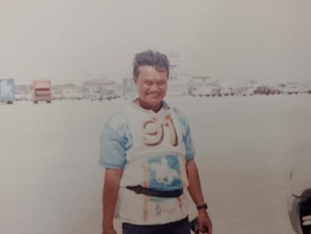
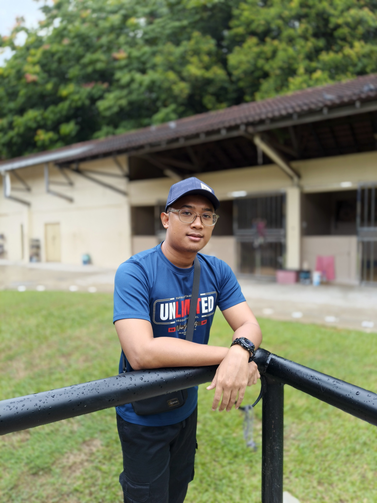

Tentang Amir Amira
Membentuk Atlet Kuda Endurance Melalui Sains Sukan & Pengalaman Lapangan.
The Spirit of Endurance
Endurance riding isn't just a race, it is a true test of horsemanship. Spanning distances from 50 to 160 kilometers, it requires pacing, vet-gate strategy, and a profound understanding of your horse's physiological limits.
Meet The Founders
Dedicated to elite endurance performance and equine welfare.

Mohammad Azhar Bin Abu Bakar (AMIR AMIRA)
Head Endurance StrategistSpecializing in metabolic pacing, terrain management, and race-day tactics across international distances.

Muhammad Syariff Bin Mohammad Azhar
Assistant Endurance Management & MarketingFocused on heart-rate recovery optimization, rider biomechanics, and personalized fitness regimens.
Sedia Bawa Kuda Anda Ke Tahap Seterusnya?
Terokai perkhidmatan Mobile Coaching on-site kami atau lihat panduan video digital kami.